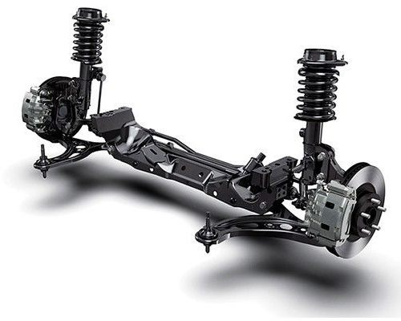

Nuestros servicios
Con mas de 13 años de experiencia en el ambiente automotriz, nos consideramos tu mejor opcion para el mantenimiento de tu vehiculo, teniendo capacitaciones en arreglos de motores nafteros o disel. Nos especializamos en los servicios de:
Lubricentro

Venta y cambio de lubricantes.
Un cambio de aceite es simplemente el proceso de retirar el aceite y filtro usado, para posteriormente adicionar el aceite nuevo con el correspondiene filtro al auto.
Tren delantero

Nos encargamos en el arreglo y alineamiento del tren delantero.
Este se esta conformado por tres partes principales: el sistema mecánico de dirección, el sistema de suspensión y el sistema de frenos.
Afinacion y encendido

Consta en el cambio de piezas, líquidos Y/o ajustes de algunas piezas; por ejemplo: lavado de inyectores, cambio de filtro de gasolina, filtro de aire, reemplazo de bujías, revisión y corrección de tiempo básico de encendido y limpieza de la cámara del filtro de aire así como chequeo de las bandas, todo esto para que cuando asistas al verificentro tus emisiones no superen lo permitido.
Cambio de correas

Es necesario cambiar la correa de distribución previamente para evitar que se rompa. La correa de distribución se encarga de sincronizar el funcionamiento de todo el motor. Un fallo en ella y será imposible poder circular con el coche casi automáticamente.
No olvides de ir a nuestra pagina de Consultas si deseas dejarnos la tuya